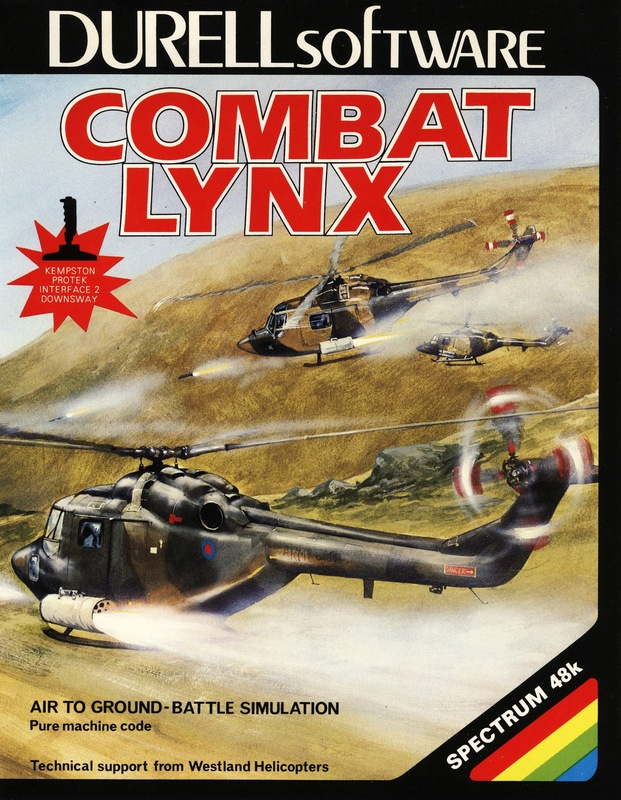
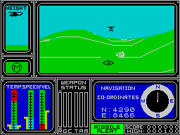

Combat Lynx


{kind=link}

| Publisher: | Durell |
| Price: | £7.95 |
| Year: | 1984 |
| Source: | CRASH, Issue 10 |

Combat Lynx is more of a simulation than a shoot em up, but it can certainly be played like a shoot em up (it has some ferocious battles) or as a game of stealthy strategy. It is also a fairly complicated program to get the hang of initially and comes complete with detailed instructions on the large inlay.
The Combat Lynx is a powerful, heavily armed helicopter, which you control in a game with 4 skill levels. As it says in the inlay, the most skilled players will be able to protect their bases with mines, support their forward bases under attack with air cover and fresh troops, and also intercept and destroy enemy vehicles (land and air) while in flight between bases. A game could last for five seconds or five hours depending on the dexterity and tactical skill of the player.

enemy jet comes in to attack
Depending on the chosen skill level there are between three and six bases which you must support with fresh troops and air cover. Base zero has an endless supply of fuel and weapons and can instantly revitalise injured troops brought in from other bases. The first task is to arm the helicopter. The screen shows plans of the Lynx in three dimensions, front, side and top. Below are the prompts which show you what is being selected, how much of it and its weight. This includes able-bodied soldiers, injured soldiers, weapons and fuel. The load is carefully calculated and shown against the maximum weight possible, and planning is required since you must be able to take on the necessary weight of fuel for the trip. Weapons include strafing rockets, cannon and machine gun pods, all of which just fire in the direction the helicopter points in; and then there are the HOT weapons which are wire guided anti-tank weapons; heat seeking anti-aircraft missiles which can be fired without aiming; and finally the mines, which can be deposited around base perimeters.
The playing screen is split up into four prime areas; a main display window in which you can see the lynx flying over the landscape and the positions of enemy vehicles, bases, etc.; a height above ground indicator: message text display; and the instrument panel which shows engine temperature, speed of flight and fuel, weapon status and selection, navigation co-ordinates in the form of a compass and map grid reference, missile launch warning and finally the score line. Switching to map alters the main display from the 3D view to the very large map area. This indicates contour heights, shows enemy positions and friendly bases, Lynx’s present position and is broken into grids for ease of reference. The objects shown on the map are last intelligence report positions — they may move and can be seen moving on an update basis. When flying, the joystick/keyboard may be used to alter the altitude and direction of the helicopter, whilst in map mode the joystick controls the scrolling of the map. It can be speeded up to scan reference blocks, block by block by using direction and fire button together. In map mode all the other instruments function and can be seen.
The message screen flashes when there is a communication for you. This may be along the lines of a request for transport, reinforcements or air cover. This screen can also be used to discover the locations of the other bases.
The landscape view is in 3D using white contour lines on a green ground to create the effect. Trees and houses are also clearly seen in white as well as enemy vehicles (in black) and base markers. In effect Combat Lynx uses a four-camera position display, so on making a right angled turn the screen blacks out momentarily to be replaced by the new view angle. The helicopter can fly both forwards and backwards at speed and may be landed on flat ground with care.
Weapons are fired first by selecting the weapon system you wish to fire. Guided weapons may simply be fired; aimed weapons must be fired after selecting cursor control, whereupon a black cross sight will appear to show where the weapon is aimed. Only one weapon system at a time may be used without reselection.
The skill levels reflect the number of bases you have to support, the number of enemy vehicles and flying craft up against you and the accuracy of their missiles.
CRITICISM
‘I wondered when 3D graphics would be created with contour lines as on a map, and this seems to be the first action game to have done this to great effect. I feel that this type of 3D is more effective than an ‘illusion’ of 3D (i.e. things getting bigger or smaller). But it uses hidden objects like houses or enemies which cannot be seen when they’re behind a hill. Such objects however, do grow or shrink in size as you approach and fly over them, using perspective properly. The 3D effect is not just randomly generated as you play through a game because the entire playing area is mapped and the contour (3D effect) references work from it. But for each game, a new landscape is created (very quickly too). The game itself is very difficult to play due to the speed of the enemy, although realistic, and due to the fact that you generally fly at full speed. This probably does mean that it has a great potential for a long term game. A nice point for beginners is that it is fun just to fly about and take pot-shots at things, although I didn’t hit very many enemy craft! Overall, well worth its money just for sheer content.’
‘Combat Lynx is both simulation and shoot em up games in one. The 3D effect created by using contour line graphics tends to give it a more technical feel, so more like a simulation, but on the other hand there are lots of jets and enemy helicopters whizzing around and ground forces shooting at you which gives the game its instant playability appeal. Once you get the hang of coping with everything, it’s possible to play a game of high strategy which evolves not only arcade skills but those of forward planning. For people who enjoy strategical type games, Combat Lynx should provide hours and hours of fun, while for those who prefer something instant and fast — choose skill level 4 and hang onto your hats! Generally the graphics are most impressive, with a few attribute problems when objects are about to become hidden but these are minor in what is otherwise an engaging and challenging game.’
‘The graphics in Combat Lynx are very good for a 3D simulation except it’s a pity that you can’t follow the landscape around when you turn through 90 degrees. This is very playable, but very hard to play and will give hours of enjoyment if you’re willing to persevere with it. I think this is probably the best simulation I’ve seen to date. My only comment really, is that I think I would’ve liked it even more if you hadn’t got the graphic of a helicopter in front of you, but instead saw the view as though you were in the cockpit. Overall, this is an excellent simulation.’
COMMENTS
| Control keys: | Cursors, but additionally there are a large amount of multi-use keys for control |
| Joystick: | Cursor |
| Keyboard play: | Very responsive, and the other keys needed are kept to a minimum during flight or fight |
| Use of colour: | Very good, although kept simple on maps and view, just a few small attribute problems |
| Graphics: | Excellent and highly novel 3D |
| Sound: | Not very much for speed of graphics |
| Skill levels: | 4 |
| Lives: | 3 |
| General rating: | Excellent, challenging on a wide range of play options and represents excellent value for money. |
| Use of computer: | 80% |
| Graphics: | 88% |
| Playability: | 90% |
| Getting started: | 91% |
| Addictive qualities: | 89% |
| Value for money: | 91% |
| Overall: | 88% |